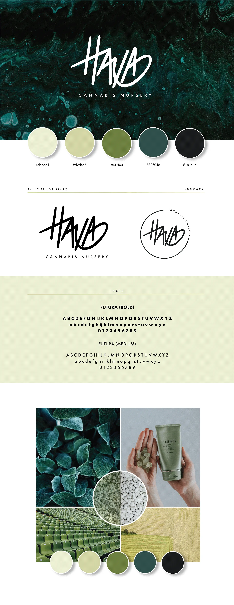
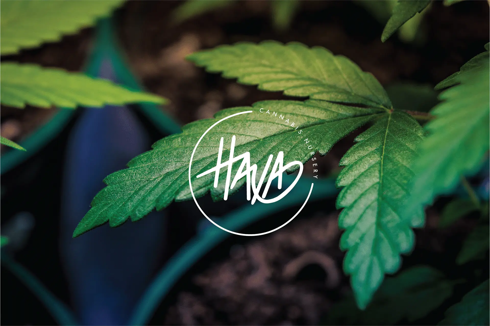
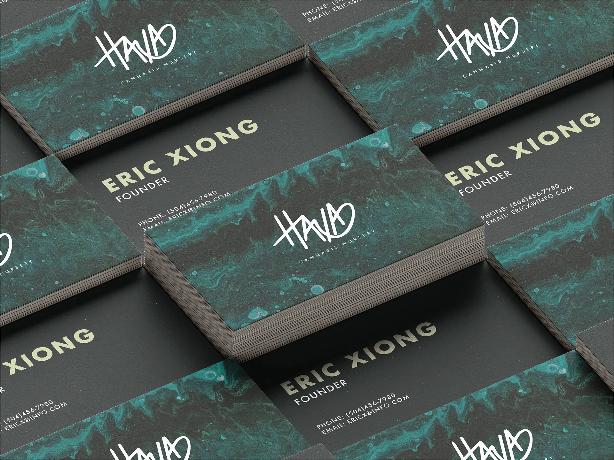
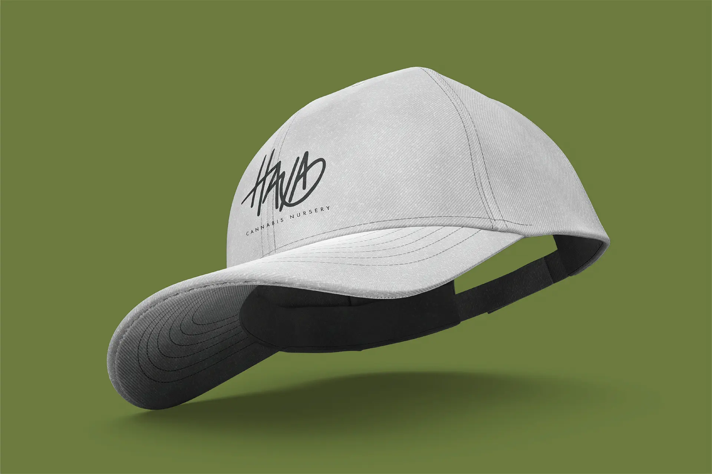
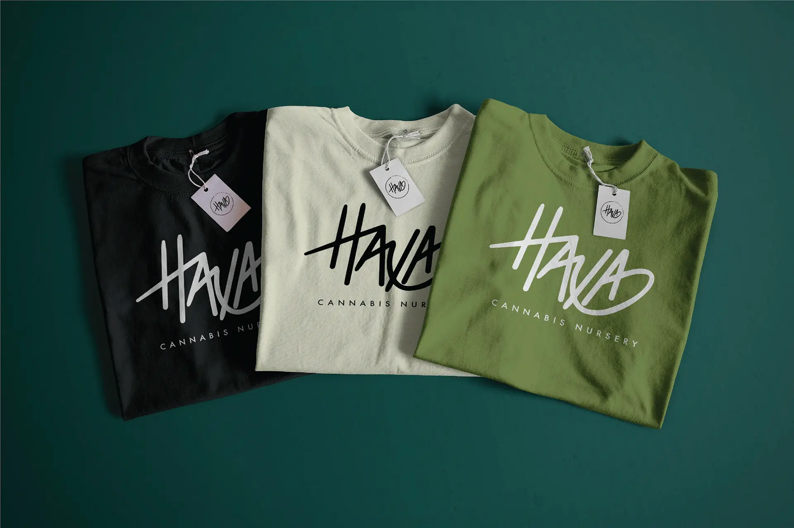
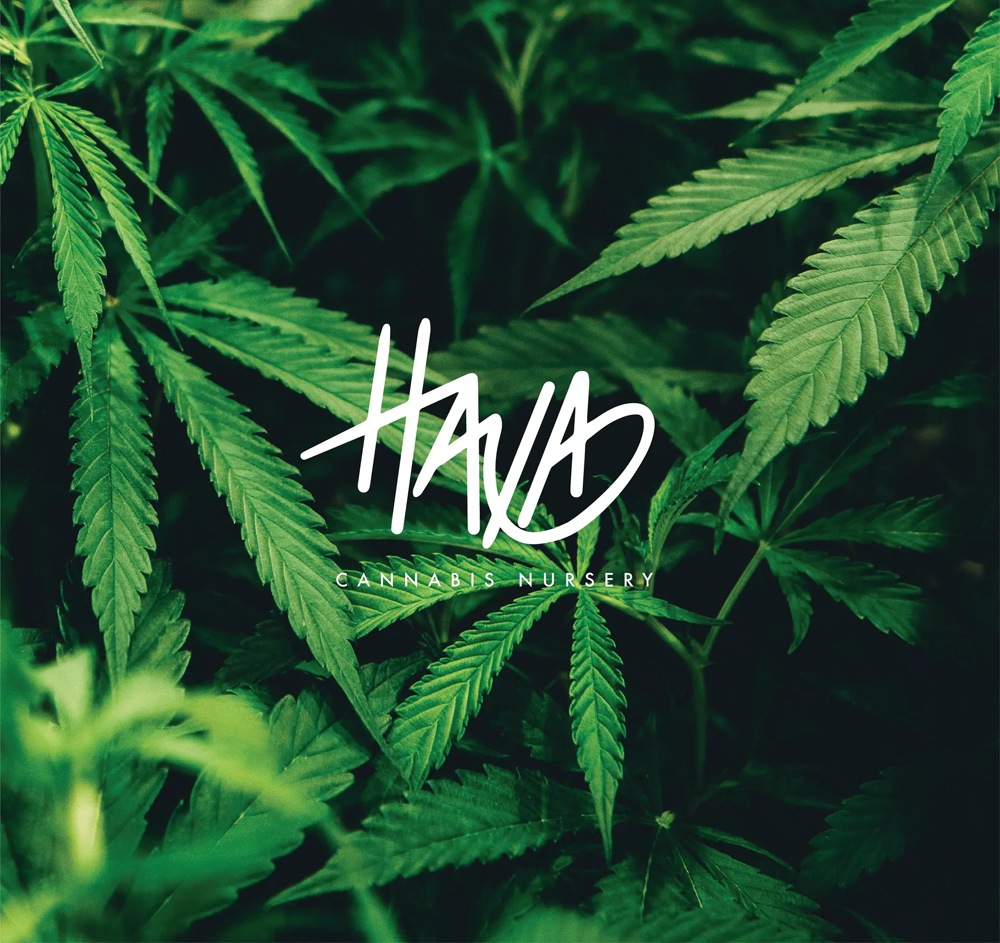
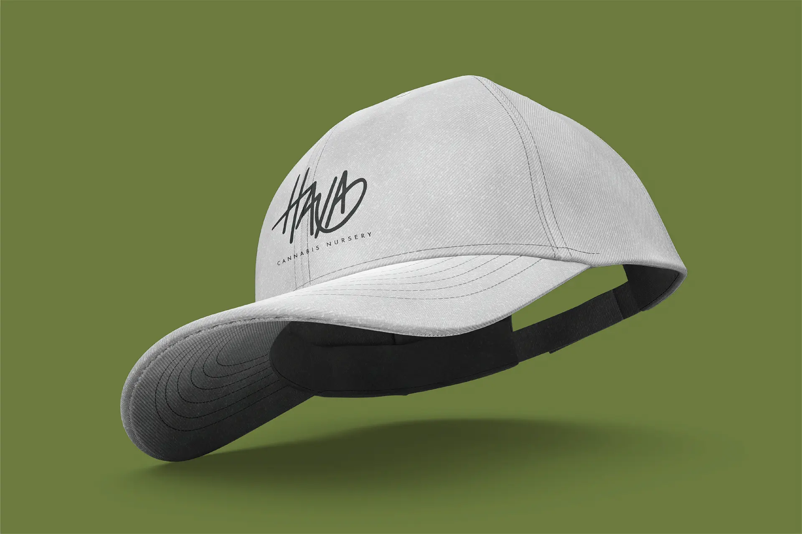
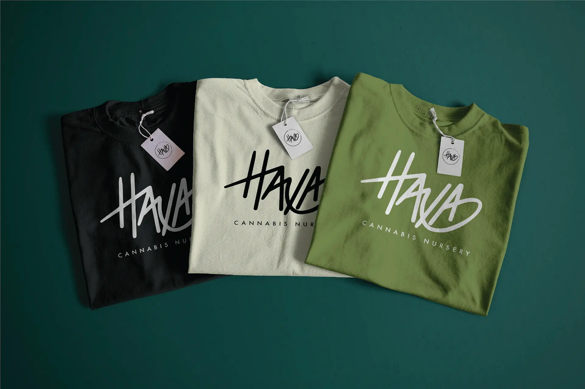
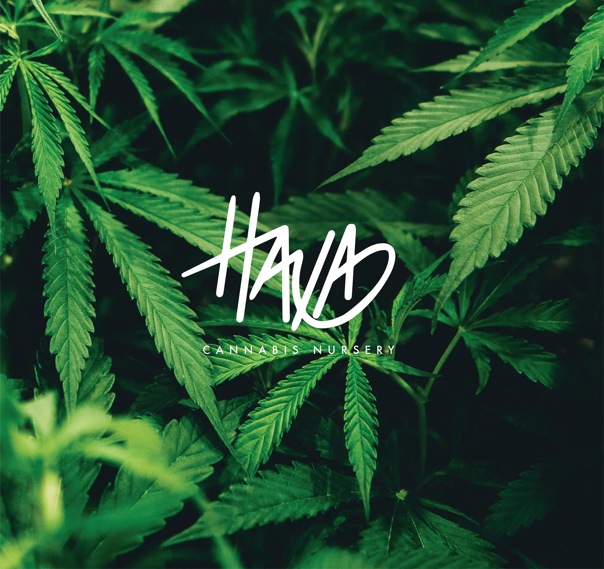

I was tasked to create a logo and a few branding ideas for a client’s start-up business. Client wanted a clean and simple design layout with very minimal elements. Client had also requested hand-drawn logo so I illustrated a few using my Procreate app to help me proceed to the final logo. In the process, I worked on finding color inspiration through my Pinterest feed. I also used a variety of mockups to help showcase the brand on a few products that the client had asked for. Overall, I learned to cooperate with my client in a timely manner and being able to deliver the message, provide design and touch point to their brand.
   




